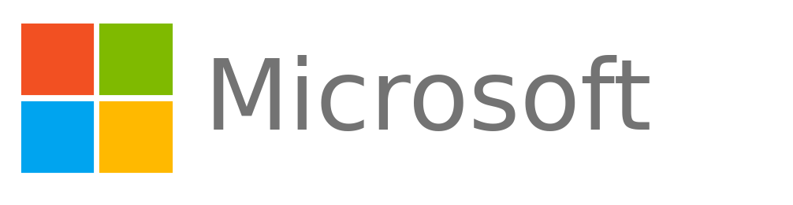

Working sessionHow to design, launch, and scale a formal, governed path that takes any employee from responsible AI user to trusted maker, across Power Apps, Copilot Studio, M365 Copilot, and beyond.
Somewhere in your tenant, right now
You do not know their name, and this is not a hypothetical. Someone is doing it right now.
The instinct is to lock it down. For the next few minutes, I am going to argue that locking it down is the most dangerous thing you could do, and show you what to do instead.
Meet Maria
Maria works in one of your business units. She is not a developer. But she sees a manual, error prone process her team repeats every week, and she knows automation technology can fix it.
Right now Maria has two paths. She can wait in a queue and navigate an unfamiliar process, or she can just build it herself, quietly, the way thousands of employees already do.
There is no third path where nothing gets built. That ship has sailed. The only question is whether the building happens with you, or around you.
Shadow IT, untracked data flows, orphaned apps and agents, blocked connector incidents, and a CoE buried in one off requests.
Vetted makers, contained blast radius, traceable deployments, and a CoE that sets the rules of the road rather than approving every app and agent.
What the frontier is already doing
Monthly active Power Platform makers, up 27 percent year over year.
Custom agents built across SharePoint and Copilot Studio in a single quarter, up 130 percent quarter over quarter.
Of the Fortune 500 have already used Copilot Studio, 230,000+ organizations in all.
Year over year growth in Microsoft 365 Copilot customers, the surface where Cowork runs.
4,000+ makers and 500+ production apps under a dual level CoE, in a regulated, safety critical industry.
1,200+ makers and 6,700+ apps, run by a central team of 2.5 people. One in five of 85,000 employees has touched a Power App.
About 1,500 citizen developers, 6,000+ solutions, 15,000+ flows. Compliance checks up front made deploying an app about 60% faster.
This is the innovation unlock. The leaders are not trading speed for control, and they are not funding a giant gatekeeping team to get it. Governed democratization is how scattered usage becomes compounding innovation.
Platform figures: Microsoft FY25 Q3 earnings. Customers: Deutsche Bahn's Microsoft story, AbbVie (Power HUG #10), Boston Scientific (Power HUG #11).
Start here, before anyone builds anything
Before we talk about makers, let's talk about everyone. Shadow AI is the new shadow IT. Anyone can paste customer data into a chatbot, whether or not they ever build a single app or agent. So the first move is not a training path. It is an attestation.
You do not earn your way into the Pledge. You start there. It is Level Zero, and everyone is already on it. The bare minimum that comes with it is a short AI literacy path, not a course catalog.
The one idea that changes everything
Here is the heresy. You believe more governance means slower makers. The opposite is true, and the fastest maker programs on earth are also the most governed.
"Why should I let you?"
Nothing moves until someone approves it. The CoE becomes the bottleneck.
"How do I help you do this safely?"
Yes by default. The environment itself nudges makers to build safely.
Same platform. Opposite posture. And trust runs both ways: the CoE extends trust to the maker by saying yes safely, and the maker trusts the governance process in return. That is the deal. Everything else in this framework is just that one shift, applied again and again.
The core idea, made visible
One question builds every rung: what is the smallest privilege we can grant safely, and what must a maker prove to earn the next one? Nobody is forced up this ladder. Some makers stay at Bronze forever building small team tools, and that is a complete success. It measures demonstrated trust, not ambition. Maria starts at the bottom rung.
Times are a defensible starting point, not gospel. For a regulated payer, keep Bronze narrower and Silver to Gold reviews stricter if your risk profile calls for it.
Six tracks, one ladder
You do not invent a new ladder per product. One vocabulary, applied across all six Microsoft AI tracks a maker might pick up. Each cell below names the smallest concrete thing a maker does to earn that rung, and links to where that learning lives. The blanks are deliberate, not gaps.
| Track | Bronze | Silver | Gold | Learn at |
|---|---|---|---|---|
| Agent Builder | Declarative agent | SharePoint grounded, team | Actions + Agent 365 | Copilot Camp |
| Copilot Cowork | Delegate a task | Multi-step, human in loop | not a build product | Cowork Collective |
| Autonomous (AI Autopilots) | prereq: Silver | Triggered + guardrails | Autonomous + observability | MCS Labs |
| Copilot Studio | Recruit | Operative, plus harness choice | Commander + GitHub Copilot | Agent Academy |
| Power Apps | PL-900 + App in a Day | Dataverse + ALM basics | Architecture + PL-400 | Power Platform Resources |
| Pro-code | n/a | n/a | AI Foundry or GitHub Copilot + custom engine | Microsoft Foundry |
← Swipe the table to see every rung and link →
In the Copilot Studio Agent Academy, Recruit, Operative, and Commander are the progressive lesson tiers, beginner to advanced, which is why they map cleanly to Bronze, Silver, and Gold. Every track sits on the universal Responsible AI Pledge, and the harness choice, standard versus GitHub Copilot, appears at Silver and Gold.
🚀 Microsoft Digital AcceleratorLearn Copilot and agents with Microsoft experts. Live sessions in your time zone, actionable guidance, and recordings for Microsoft Unified customers. Choose the journey that fits your organization. Explore the program →The one rule that keeps this humane
Here is the discipline that keeps every checkpoint honest. At each rung, the question is never "are you an expert." It is "can you build one real thing, safely, and publish it once."
Trust is earned in the smallest verifiable increment, then the ladder hands you the next one. Set the bar at mastery and nobody climbs. Set it at competency and everybody moves.
The maker's path
Before anyone talks about governance, give the maker a map. Every solution, an app or an agent, moves through the same seven steps. This is not a line of approval gates. It shows a maker what they can do on their own, what guardrails apply, and when to bring in help.
Start small, grow on a predictable path. A maker can ship a small, low-consequence tool, then follow the same steps as it gains users, connects to more systems, touches more sensitive data, or takes more autonomous actions. A good idea is never blocked or thrown away. It just picks up the right guardrails and the right help as its stakes rise.
Operating-model concepts here and in the scaling sections that follow are adapted from Productive Edge's AI-native delivery perspective. productiveedge.com
Building your program
The trust ladder you just saw, now the spine of your program.
Which environment a maker builds in at each level, and the gates before Novice even begins.
Turn governance from a black box into a service with published SLAs.
Treat certification as a status you can suspend or revoke, not a one time milestone.
The gate an agent clears before it is published to real users: knowledge, reach, safety, and cost.
You already made the first decision, the ladder itself. The other four turn it into a running program. Everything before this was concept. Everything from here is construction.
Building your program, decision 2
You do not govern by policing every build. You route each app, flow, and agent into one of three risk zones, and the zone decides the environment, the controls, and who owns it. This is Microsoft's recommended risk-based model: match governance to risk instead of treating everything the same.
Route the work first, then assign the people, environments, security, ALM, and support. A solution does not start in Red because it uses Power Platform. It starts in the zone that matches its risk, and moves up only when it must.
Before anyone enters Green, every maker clears three gates: manager sign-off, security training, and a data-classification quiz at 100 percent.
Building your program, decision 3
Publishing these numbers is what turns your CoE from a black box into a service people trust. If Maria does not know whether a review takes two days or two months, she builds around you instead of through you.
Give makers one front door
Training paths matched to your maker level.
Intake with a short up-front check for licensing and compliance.
A catalog of verified solutions to start from, not from scratch.
A searchable community wiki, not scattered chat threads.
💡 The design rule: every step you add to intake, remove one somewhere else. Boston Scientific built this front door as a Power App, moved compliance to the start, and saved days to weeks on starting a new project. Run approvals with a human in the loop at first, then let the routine ones move to Power Automate.
Example targets. Adjust to your team's capacity, but commit to them in writing.
Building your program, decision 4
Most organizations treat a certification like a diploma on the wall, earned once and kept forever. Wrong mental model. It grants real platform access, so it has to behave like an access control: auditable, reversible, time bound. Stop thinking diploma. Start thinking door, a door you can close.
| Status | Meaning | What triggers it |
|---|---|---|
| Active | Full privileges of the certified tier | Successful promotion review |
| Suspended | Privileges paused pending remediation | A DLP violation or failed check on a production solution |
| Revoked | Privileges removed; re-application required | Repeated violations or deliberate policy bypass |
| Lapsed / Reinstated | Paused for an overdue step, then restored | A required artifact is overdue, then verified |
Building your program, decision 5
The decision: define one extra gate an agent must clear before it is published to real users. Why it matters: an app fails with a broken formula you can see, but an agent's risk shows up the moment it goes live. It can reach people, ground on real data, take real actions, and draw on a shared credit pool, and it fails quietly by hallucinating or oversharing. So before any agent is published, it clears four checks.
One approved list of sources an agent may ground on, reviewed quarterly for drift.
Test canvas for Bronze, broader internal for Silver, public web with elevated sign-off for Gold.
Grounding documented, adversarial prompts tested, fallback defined, human handoff configured.
Assign a capacity tier at plan time and monitor burn rate. The Copilot Credit pool is shared and finite.
The outcome: no agent reaches users on trust alone. Every published agent has a named owner, an approved knowledge boundary, a tested safety profile, and a funded capacity tier, matched to how far it can reach.
Bringing makers along
Most CoEs treat buildathons as high risk. The opposite is true. AI use cases that do not help the company improve margin are just AI hobbies. A buildathon replaces hobbies with purpose, and because makers build in a personal development environment, a correctly governed program carries no enterprise risk.
So host your own. Remember, a license is not enablement. A CoE that runs or endorses buildathons owns the real entry gateway to the certified pathway.
"The best ideas often come from the people closest to the work... What impressed me most was not just what our teams built in a single day, but how they built it. Give people the right tools and support, and they can find smart, practical ways to make better care easier to deliver."
More proof from the field
Both start with purpose, surround makers with support, and end with solutions other teams can reuse.
Takeda · Power Up hackathons
Makers pick the tool after the idea, with a support network beside them. Online or on site, the journey adapts to the audience. One business unit has about 80 citizen developers who give 20% of their time to building, with their managers' backing.
Boston Scientific · Citizen Dev Academy
The first cohort mixed non-starters and starters from every region and built working solutions from end to end. Their low-code catalog shares reviewed solutions, so the next maker starts from a working example. About 150 are published and about 400 more are waiting to be added.
💡 The pattern: a purpose to build for, support alongside, and a showcase or catalog so every win becomes something the next maker can reuse.
As presented in Power HUG sessions by Takeda (#18) and Boston Scientific (#20). Figures are as stated by the presenters.
Maria's story, continued
Maria asks her manager for an intro to the CoE, clears her three eligibility gates, and submits the intake form.
The CoE confirms eligibility and provisions her Novice sandbox.
She finishes Bronze training and builds the app that fixes her team's weekly process, the one from the very first slide.
A reviewer signs off. Maria is a certified Bronze maker, her app is in real use, and it was built with you, not around you.
Same motivated employee, same app. But now it is governed, visible, and supported instead of hidden and risky. Maria is illustrative, but this exact arc is what a working program produces, in under three weeks of part time effort.
When it scales
A successful maker solution often needs to reach more people or connect to more systems. That moment is where good ideas usually die, rebuilt from scratch by a team that was never in the room. The Scout prevents that.
The Scout is an accountability, not a new job title. A Center of Excellence, a platform or technology team, a delivery team, or a maker-support community can play the role. The Scout is the maker's guide and advocate, not an auditor or a gatekeeper, and helps a proven solution get ready for its next stage.
The work is preserved, not discarded. The business intent, the user learning, the working prototype, and the maker's domain expertise all become inputs to the next stage, instead of being thrown away and rebuilt from zero.
When it scales
Scaling rarely means scrapping the maker's solution for a brand-new app. Hybrid delivery keeps the parts that already work and adds professional engineering only where it creates real value.
Makers prove the value. Specialists strengthen the solution. Professional engineering enables enterprise scale. The original maker stays on the journey, because that person usually understands the problem best. Not every solution needs this. Escalate only when consequence or technical demands justify it.
When it scales
Reviewing every app and agent on a calendar would bury the program in paperwork and slow innovation. So do not. Let the platform watch continuously, and only pull a solution in for a look when something quantifiable crosses a threshold.
A flag triggers a targeted review, never an automatic shutdown. The review decides whether the solution should:
Triggers worth watching
Monitor everything automatically. Review only what materially changes. Use the controls your approved platforms already provide. There is no custom portfolio tool to build.
Knowing it is working
A healthy program is rising maker and agent count with flat or falling risk indicators. Rising count with rising incidents is the warning sign that a guardrail quietly became a gate, or the reverse.
| Dimension | What to track | Example target |
|---|---|---|
| Adoption & scale | Certified makers over time; apps, agents, and flows in active use | Headcount growing quarter over quarter |
| Business impact | Hours saved, cycle time, ROI where possible | ROI on 25 percent or more of production solutions |
| Compliance & quality | DLP violations; solution check failure rate | Violations per 100 solutions trending down |
| Agent quality | Grounding compliance; moderation hits; fallback rate | 100 percent grounding compliance |
| Cost & credits | Credit consumption per outcome vs value delivered | Portfolio value exceeds credits consumed |
| Sentiment | Do makers feel enabled? Is IT comfortable with the risk? | Maker satisfaction at 80 percent or higher |
It starts with you
The close
No budget cycle, no new platform, no one's sign-off. Just one sponsor and the willingness to say "yes, safely." Here is where you start.
The pen is yours. So is the next Maria.
Jake Gardner | Microsoft AI Business Solutions | jakegardner@microsoft.com